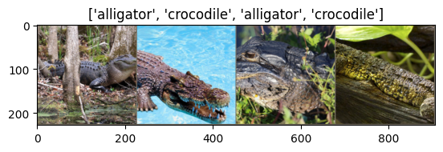
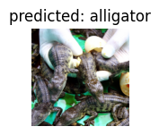
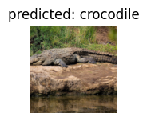
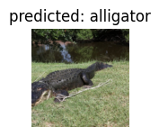
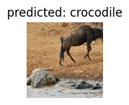
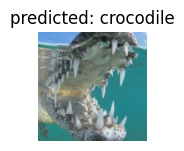

Exploring Transfer Learning with PyTorch: A Deep Learning Journey
I recently embarked on a project to implement a model using PyTorch. This led me to delve deep into the PyTorch framework, and to make use of transfer learning (as I did in my last blog post). In this post, I share both what I learned from this experience, and how you can create a similar PyTorch model of you own. This post is inspired greatly by a post by Sasank Chilamkurthy, whose excellent tutorial you can find here. This post also makes use of Rohit Rawat’s Crocodylia dataset.
Transfer Learning: A Brief Overview
In the field of deep learning, few people start by training an entire convolutional neural network (ConvNet) from scratch, primarily due to the scarcity of large datasets. Instead, a common practice is to employ transfer learning. This approach entails utilizing a model that has been pre-trained on an extensive dataset like ImageNet, which contains 1.2 million images across 1000 categories. To do this, we freeze the weights of the pre-trained neural network layers except a few of the last fully connected layers. We can then replace the last layer with a new one (to making the model capable of being used as, for example, a binary classifier), and then train this new layer to make the model’s predictions more accurate.
Let’s see how all of this can be done using the PyTorch framework!
Loading the Data
To kickstart our exploration, we need a dataset. In this tutorial, we’re working with a small dataset containing images of alligators and crocodiles, with ~350 training images per class and ~70 validation images per class. You can download the dataset here.
We’ll leverage PyTorch’s torchvision and torch.utils.data packages for data loading. To get started, we define data transformations for both the training and validation datasets.
import os
import torch
from torchvision import datasets, transforms
# Define data transformations for both training and validation datasets
data_transforms = {
'train': transforms.Compose([
transforms.RandomResizedCrop(224),
transforms.RandomHorizontalFlip(),
transforms.ToTensor(),
transforms.Normalize([0.485, 0.456, 0.406], [0.229, 0.224, 0.225])
]),
'val': transforms.Compose([
transforms.Resize(256),
transforms.CenterCrop(224),
transforms.ToTensor(),
transforms.Normalize([0.485, 0.456, 0.406], [0.229, 0.224, 0.225])
]),
}Data transformations are defined using PyTorch’s transforms module. These transformations are applied to both the training and validation datasets to preprocess the images. The transformations include resizing, random cropping, horizontal flipping, converting to tensors, and normalization.
Next, we mount Google Drive to access the dataset. (I used Google Colab to execute my code cells. This step may be slightly different for you depending on the platform you use to execute your own code cells.) You should update data_dir with your dataset location.
from google.colab import drive
drive.mount('/content/drive')
data_dir = '/content/drive/MyDrive/hymenoptera_data' # Update this path to your dataset locationWith the data transformations in place, we can create datasets and data loaders for both training and validation sets.
# Create datasets for both training and validation
image_datasets = {x: datasets.ImageFolder(os.path.join(data_dir, x), data_transforms[x])
for x in ['train', 'val']}
# Create data loaders for both training and validation datasets
dataloaders = {x: torch.utils.data.DataLoader(image_datasets[x], batch_size=4,
shuffle=True, num_workers=4)
for x in ['train', 'val']}
# Store the sizes of the training and validation datasets
dataset_sizes = {x: len(image_datasets[x]) for x in ['train', 'val']}
# Get the class names (e.g., 'alligators' and 'crocodiles') from the training dataset
class_names = image_datasets['train'].classes
# Check if a CUDA-enabled GPU is available and set the device accordingly
device = torch.device("cuda:0" if torch.cuda.is_available() else "cpu")Datasets and data loaders are created for both the training and validation sets. We use the ImageFolder class to load images from the specified directories and apply the previously defined data transformations. Data loaders are used to load batches of data during training and validation. The device is also determined based on the availability of a GPU.
Visualizing Data
Let’s start by visualizing a few training images to get a better understanding of the applied data augmentation techniques.
import numpy as np
import matplotlib.pyplot as plt
import torchvision
def imshow(inp, title=None):
inp = inp.numpy().transpose((1, 2, 0))
mean = np.array([0.485, 0.456, 0.406])
std = np.array([0.229, 0.224, 0.225])
inp = std * inp + mean
inp = np.clip(inp, 0, 1)
plt.imshow(inp)
if title is not None:
plt.title(title)
plt.pause(0.001)
# Get a batch of training data
inputs, classes = next(iter(dataloaders['train']))
# Make a grid from the batch of images
out = torchvision.utils.make_grid(inputs)
# Display the grid of images with their corresponding class names as titles
imshow(out, title=[class_names[x] for x in classes])Here, we define a function (imshow) to display images and then uses it to visualize a batch of training data. Specifically, this function shows a grid of images with their corresponding class names as titles.

Nice, our function appears to be working well.
Training the Model
Now, let’s write a general function to train a model. This function encompasses several key aspects of deep learning training, including learning rate scheduling and model checkpointing.
import time
import os
import torch
def train_model(model, criterion, optimizer, scheduler, num_epochs=25):
since = time.time()
with TemporaryDirectory() as tempdir:
best_model_params_path = os.path.join(tempdir, 'best_model_params.pt')
torch.save(model.state_dict(), best_model_params_path)
best_acc = 0.0
for epoch in range(num_epochs):
print(f'Epoch {epoch}/{num_epochs - 1}')
print('-' * 10)
for phase in ['train', 'val']:
if phase == 'train':
model.train()
else:
model.eval()
running_loss = 0.0
running_corrects = 0
for inputs, labels in dataloaders[phase]:
inputs = inputs.to(device)
labels = labels.to(device)
optimizer.zero_grad()
with torch.set_grad_enabled(phase == 'train'):
outputs = model(inputs)
_, preds = torch.max(outputs, 1)
loss = criterion(outputs, labels)
if phase == 'train':
loss.backward()
optimizer.step()
running_loss += loss.item() * inputs.size(0)
running_corrects += torch.sum(preds == labels.data)
if phase == 'train':
scheduler.step()
epoch_loss = running_loss / dataset_sizes[phase]
epoch_acc = running_corrects.double() / dataset_sizes[phase]
print(f'{phase} Loss: {epoch_loss:.4f} Acc: {epoch_acc:.4f}')
if phase == 'val' and epoch_acc > best_acc:
best_acc = epoch_acc
torch.save(model.state_dict
(), best_model_params_path)
print()
time_elapsed = time.time() - since
print(f'Training complete in {time_elapsed // 60:.0f}m {time_elapsed % 60:.0f}s')
print(f'Best val Acc: {best_acc:.4f}')
model.load_state_dict(torch.load(best_model_params_path))
return modelWe define a function (train_model) to train a deep learning model. It includes training and validation loops, tracks loss and accuracy, and saves the best model parameters based on validation accuracy. Learning rate scheduling is also applied.
Visualizing Model Predictions
Let’s create a function to visualize model predictions. This will help us understand how well the model is performing on specific images.
import matplotlib.pyplot as plt
import numpy as np
def visualize_model(model, num_images=6):
was_training = model.training
model.eval()
images_so_far = 0
fig = plt.figure()
with torch.no_grad():
for i, (inputs, labels) in enumerate(dataloaders['val']):
inputs = inputs.to(device)
labels = labels.to(device)
outputs = model(inputs)
_, preds = torch.max(outputs, 1)
for j in range(inputs.size()[0]):
images_so_far += 1
ax = plt.subplot(num_images // 2, 2, images_so_far)
ax.axis('off')
ax.set_title(f'Predicted: {class_names[preds[j]]}')
imshow(inputs.cpu().data[j])
if images_so_far == num_images:
model.train(mode=was_training)
return
model.train(mode=was_training)We define another function (visualize_model) to visualize model predictions. It takes a trained model, makes predictions on a batch of validation data, and displays the input images along with their respective predicted class labels.
Finetuning the Model
Now comes the exciting part—finetuning a pretrained model for our specific task. In this example, we’ll use the popular ResNet18 architecture pretrained on ImageNet and adapt it for our binary classification task (alligators vs. crocodiles).
from torchvision import models
import torch.nn as nn
import torch.optim as optim
# Load the pretrained ResNet-18 model
model_ft = models.resnet18(pretrained=True)
# Modify the final fully connected layer for binary classification
num_ftrs = model_ft.fc.in_features
model_ft.fc = nn.Linear(num_ftrs, 2)
# Define loss function and optimizer
criterion = nn.CrossEntropyLoss()
# Observe that all parameters are being optimized
optimizer_ft = optim.SGD(model_ft.parameters(), lr=0.001, momentum=0.9)
# Decay the learning rate by a factor of 0.1 every 7 epochs
exp_lr_scheduler = lr_scheduler.StepLR(optimizer_ft, step_size=7, gamma=0.1)
# Move the model to the GPU if available
model_ft = model_ft.to(device)In this code block, a pretrained ResNet-18 model is loaded and modified for binary classification. The final fully connected layer is replaced with a new one with 2 output units (for alligators and crocodiles classification). The loss function, optimizer, and learning rate scheduler are defined. The model is moved to the GPU if available.
Now that everything is set up, we can proceed to train the model using the train_model function defined earlier.
model_ft = train_model(model_ft, criterion, optimizer_ft, exp_lr_scheduler, num_epochs=25)We train the fine-tuned model using the train_model function defined earlier. It prints the training and validation loss and accuracy for each epoch and records the best model parameters based on validation accuracy.
Epoch 0/24
----------
train Loss: 0.7276 Acc: 0.6117
val Loss: 0.4810 Acc: 0.7767
Epoch 1/24
----------
train Loss: 0.7097 Acc: 0.6749
val Loss: 0.5373 Acc: 0.7573
Epoch 2/24
----------
train Loss: 0.9122 Acc: 0.6185
val Loss: 0.5871 Acc: 0.7379-
…
Epoch 23/24
----------
train Loss: 0.3144 Acc: 0.8555
val Loss: 0.4539 Acc: 0.7864
Epoch 24/24
----------
train Loss: 0.3832 Acc: 0.8330
val Loss: 0.4158 Acc: 0.7961
Training complete in 9m 19s
Best val Acc: 0.8350After training, our best validation accuracy is recorded as 0.8350. But can we do better?
Visualizing Model Predictions
To see how our finetuned model performs, we can use the visualize_model function.
visualize_model(model_ft)This code block visualizes the predictions of the fine-tuned model on a batch of validation data, allowing us to see how well the model is performing on specific images.
  
ConvNet as a Fixed Feature Extractor
In the previous example, we finetuned the entire model. However, sometimes we might want to use a pretrained ConvNet as a fixed feature extractor. In this case, we’ll freeze all layers except the final fully connected layer. This can be useful when you have a small dataset and you don’t want to risk overfitting by finetuning the entire model.
Let’s create a function to set the requires_grad attribute of the model’s layers for feature extraction.
def set_parameter_requires_grad(model, feature_extracting):
if feature_extracting:
for param in model.parameters():
param.requires_grad = FalseWe define a function (set_parameter_requires_grad) to freeze the weights of layers in a model. It sets requires_grad to False for all parameters if feature_extracting is True.
Next, we’ll (again) load a pretrained ResNet18 model and replace the final fully connected layer for our binary classification task; however, this time will freeze all layers except the final fully connected layer.
# Load the pretrained ResNet-18 model
model_conv = models.resnet18(pretrained=True)
# Freeze all layers except the final fully connected layer
set_parameter_requires_grad(model_conv, feature_extracting=True)
# Modify the final fully connected layer for binary classification
num_ftrs = model_conv.fc.in_features
model_conv.fc = nn.Linear(num_ftrs, 2)
# Define loss function and optimizer
criterion = nn.CrossEntropyLoss()
# Observe that only the parameters of the final layer are being optimized
optimizer_conv = optim.SGD(model_conv.fc.parameters(), lr=0.001, momentum=0.9)
# Decay the learning rate by a factor of 0.1 every 7 epochs
exp_lr_scheduler = lr_scheduler.StepLR(optimizer_conv, step_size=7, gamma=0.1)
# Move the model to the GPU if available
model_conv = model_conv.to(device)This freezing technique is frequently used when you want to use a pretrained model as a fixed feature extractor. The rest of the code is similar to the fine-tuning scenario, defining loss, optimizer, and learning rate scheduler and moving the model to the GPU.
Now, we can train the model using the same train_model function as before.
model_conv = train_model(model_conv, criterion, optimizer_conv, exp_lr_scheduler, num_epochs=25)Again, we print the training and validation loss and accuracy for each epoch and record the best model parameters based on validation accuracy.
Epoch 0/24
----------
train Loss: 0.7446 Acc: 0.5350
val Loss: 0.4117 Acc: 0.7864
Epoch 1/24
----------
train Loss: 0.6309 Acc: 0.6682
val Loss: 0.3449 Acc: 0.8447
Epoch 2/24
----------
train Loss: 0.6819 Acc: 0.6614
val Loss: 0.6134 Acc: 0.6990-
…
Epoch 23/24
----------
train Loss: 0.5224 Acc: 0.7381
val Loss: 0.3565 Acc: 0.8738
Epoch 24/24
----------
train Loss: 0.5292 Acc: 0.7336
val Loss: 0.3602 Acc: 0.8738
Training complete in 8m 42s
Best val Acc: 0.8835After freezing the layers, our best validation accuracy is now recorded as 0.8835 – great!
Let’s now visualize our model!
visualize_model(model_conv)
plt.ioff()
plt.show() 
Inference on custom images
While it is interesting to see how well our model performs on a pre-made dataset, it will doubtless be more exciting if we can test our model on any image pulled from Google. Allegheny College (of which I am now an alumnus!) has a statue of an alligator on its campus. For fun, then, let’s see how well our model performs when fed an image of this very statue. Here’s the image:
Let’s create a function that takes a model and an image as input, processes the image, makes predictions using the model, and displays the image along with its respective predicted class label.
def visualize_model_predictions(model, img_path):
# Store the current training state of the model
was_training = model.training
# Set the model to evaluation mode
model.eval()
# Open and preprocess the image from the specified path
img = Image.open(img_path)
img = data_transforms['val'](img) # Apply the same transformations as for validation data
img = img.unsqueeze(0) # Add a batch dimension
img = img.to(device) # Move the image to the specified device (GPU or CPU)
# Disable gradient computation during inference
with torch.no_grad():
# Forward pass to obtain predictions
outputs = model(img)
_, preds = torch.max(outputs, 1)
# Display the image and its predicted class
ax = plt.subplot(2, 2, 1) # Create a subplot
ax.axis('off') # Turn off axis labels
ax.set_title(f'Predicted: {class_names[preds[0]]}') # Set the title with the predicted class name
imshow(img.cpu().data[0]) # Display the image
# Restore the model's original training state
model.train(mode=was_training)We can now predict the label of our image.
# Visualize predictions for a single image using the specified model
visualize_model_predictions(
model_conv,
img_path='/content/drive/MyDrive/crocodylia_data/alligator.jpeg' # Specify the path to the image
)
# Turn off interactive mode for matplotlib to display the plot
plt.ioff()
# Display the plot with the image and its predictions
plt.show()
Indeed, the statue is in fact one of an alligator! Wonderful!
Conclusion
Using transfer learning with PyTorch, we’ve explored how we can finetune a pretrained ConvNet and employ it to a novel sitation (in this case, a small dataset of alligator and crocodile images). By harnessing the knowledge encoded in pretrained models, we can accelerate our model development process and achieve great results with relatively small datasets!